Пока родителей не было…
Шесть кадров из заставки игры. Листай дальше — и узнаешь, откуда в доме столько мусора.
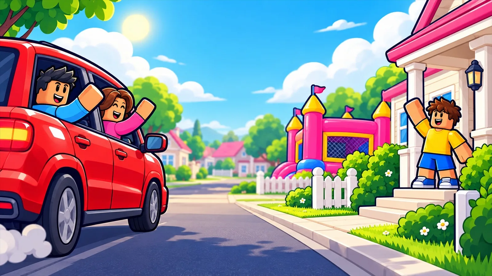
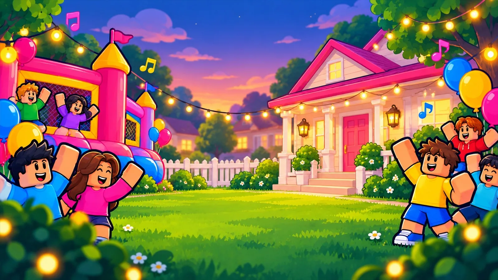
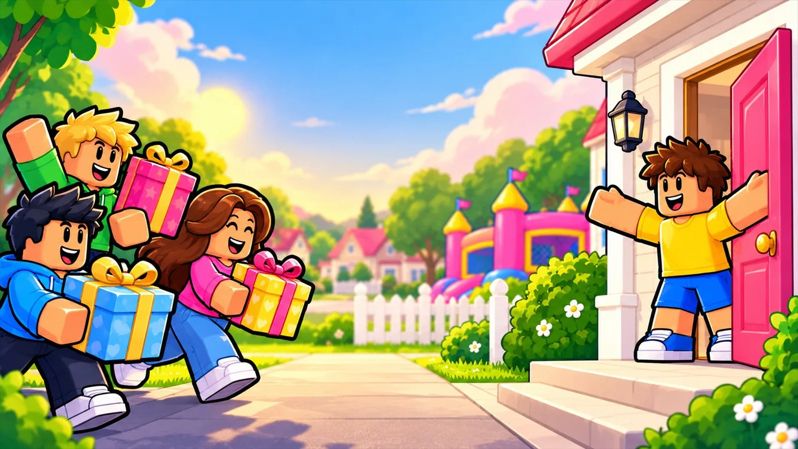
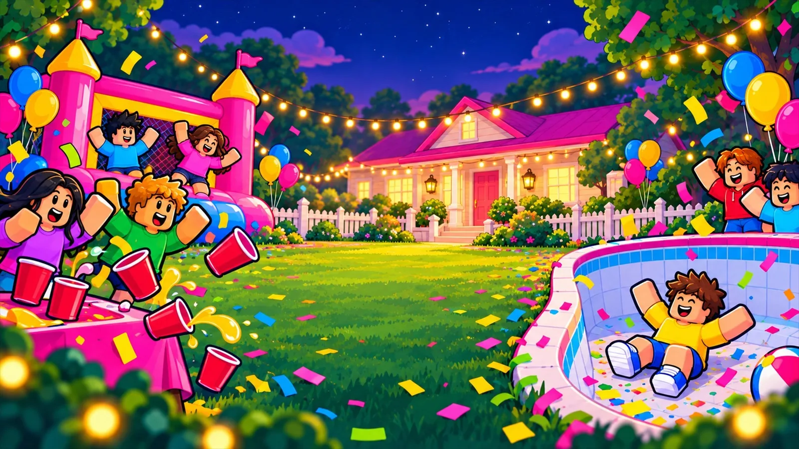
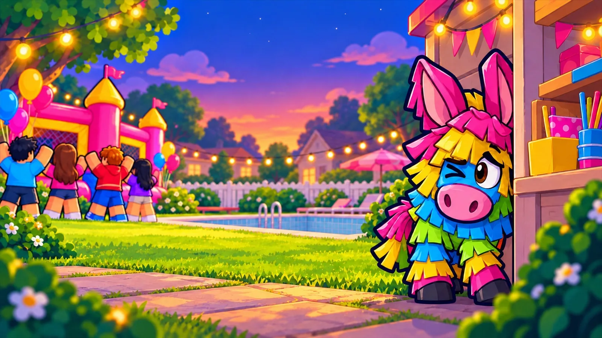
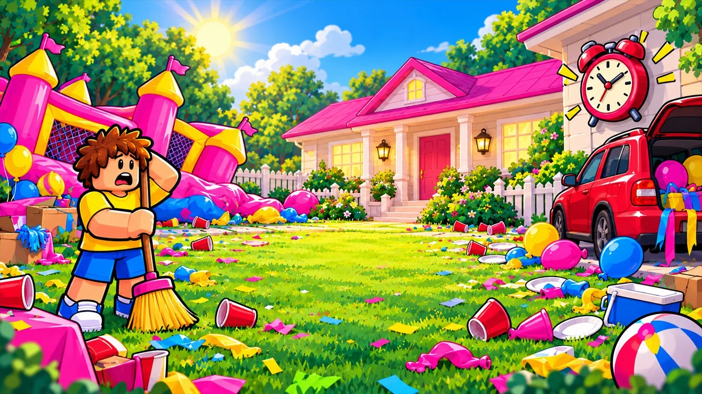
Твоя задача — убрать дом, пока не прозвенел таймер.
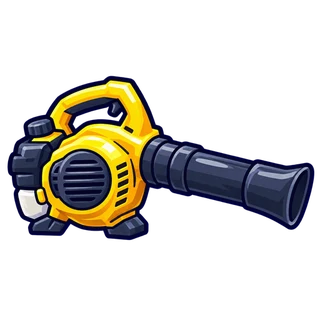
Поводи мышкой — это воздуходувка Проведи пальцем — сдуешь конфеттиПока родителей не было, вечеринка вышла из-под контроля. Убери дом до их возвращения — и выясни, куда сбежала пиньята.
А ещё Pinyo спряталась на странице 5 раз. Найдёшь?
Шесть кадров из заставки игры. Листай дальше — и узнаешь, откуда в доме столько мусора.






Твоя задача — убрать дом, пока не прозвенел таймер.
, крыша магазина, , , патио, бассейн, парковка, сад и подвал.
подчёркнутые — нажми, там есть фото
Хватай мусор и неси в мешок. Прокачай руки — будешь брать больше и быстрее.
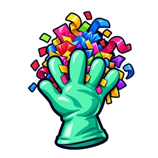
Хватка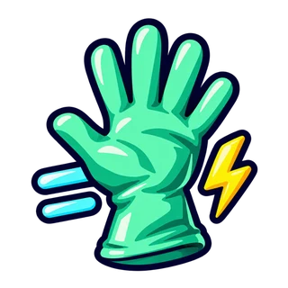
Ловкость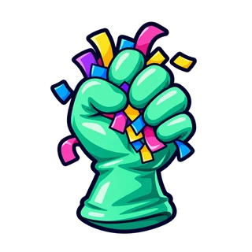
Удержание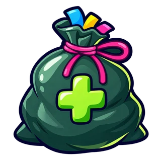
МешокСметает мусор кучей. Прокачай — и одним взмахом уберёшь пол-комнаты.
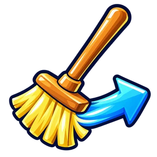
Дальность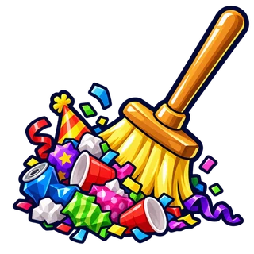
ВместимостьСдувает конфетти даже из углов. Прокачай мощность — и мусор полетит куда надо.
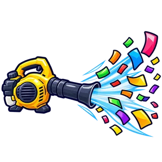
Мощность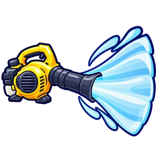
Ширина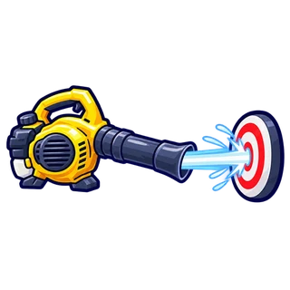
Прицел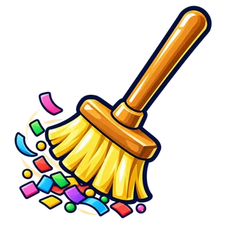
Прокачай инструментЖурнал. Кто всё это устроил?
За Pinyo тянется след из конфетти и фантиков. Найди все 9 улик — и узнаешь, что случилось на самом деле.
Найдено 0 из 9 — нажимай на карточки
4 уровня сложности. Чем сложнее — тем короче раунд.
Длина раунда по уровням сложностиЗови до трёх друзей в свой дом: один метёт, другой сдувает, третий носит мешки.
А ещё — гемы,
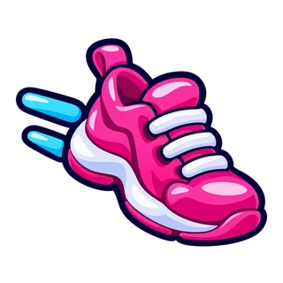
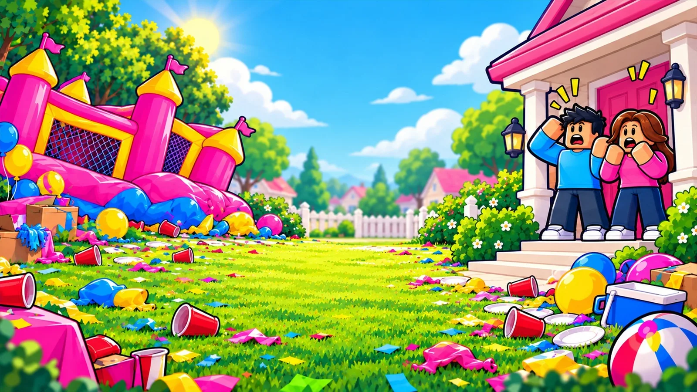
Да, играть можно бесплатно. За робуксы есть необязательные улучшения.
На компьютере и телефоне.
Да, в одном доме может быть до 4 игроков.
От 20 до 90 минут — зависит от сложности.
Скоро. Нажми «Следить за выходом», чтобы не пропустить.
Party Cleanup! скоро выйдет в Roblox. Подпишись, чтобы узнать первым.
Следить за выходом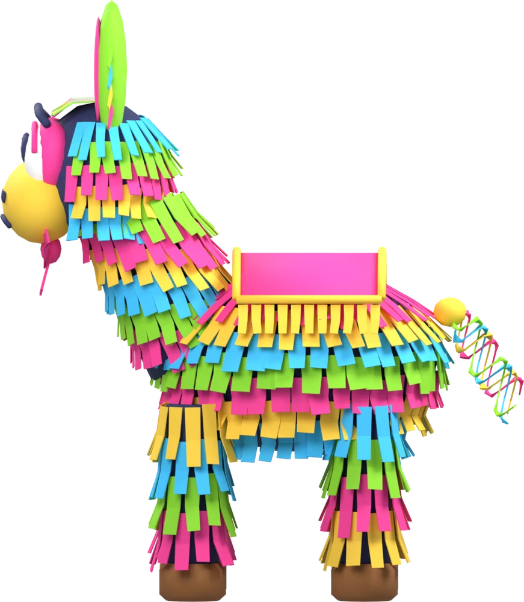